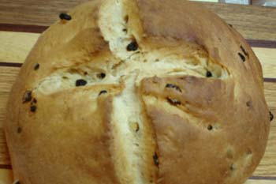

Irish dinner
Reserving Friday night to continue our pursuit of the perfect fish fry, I decided to prepare the traditional St. Paddy’s corned beef and cabbage tonight instead. (By the way, for my Pittsburgh readers, last Friday we ate fish at St. Therese in Munhall and it was great; hand-cut French fries!)
I don’t have too much to say about the dinner itself; I didn’t corn my own beef or anything, although I suppose I could have. I have to confess here that I don’t really like the flavor and drab color of home-corned beef. Call me a sodium nitrite junkie; I only eat the stuff once a year or maybe a couple times on a sandwich.
What I did make was a wonderful bread called barm brack. I like it much better than the traditional soda bread, which when you look at a recipe is really nothing but a big biscuit. This is a slightly sweetened yeast bread and here is the recipe.

Sponge
- 3/4 cup milk
- 1/2 cup water
- 1 tablespoon active dry yeast
- 1 1/2 cups all purpose flour
Dough
- 1/2 cup golden raisins
- 1/2 cup currants
- 6 tablespoons soft butter
- 1/3 cup sugar
- 1 teaspoon salt
- 1/2 teaspoon cinnamon
- 1/4 teaspoon nutmeg
- 1/8 teaspoon ground cloves
- 1/8 teaspoon allspice
- 2 eggs
- 3 + cups all purpose flour
To make the sponge: heat milk and water in glass measuring cup on high in microwave for 1 minute until just warm, about 110 degrees on instant read thermometer. Pour into small bowl, whisk in yeast and stir in flour. Cover bowl with plastic wrap and allow sponge to rise for 30 minutes, or until doubled in bulk.
If your currants are all dried out like mine were (they were at least 8 years old!) cover with orange juice in glass measuring cup, heat in microwave for 1 minute and let soak while sponge is rising. If they are fresh and moist you can skip this step.
To make the dough in a mixer, use a heavy-duty mixer fitted with the paddle and beat butter with sugar, salt and spices until soft and smooth. Beat in eggs, one at a time, then continue beating until smooth and light. Beat in sponge and remaining flour. Continue to mix until dough is smooth and elastic, about 5 minutes, adding a little extra flour if dough is too sticky.
To mix the dough in the food processor, place butter, sugar, salt, spices and eggs in work bowl fitted with metal blade. Pulse 10 or 12 times at 1-second intervals to mix smooth. Remove metal blade and attach plastic dough blade; add sponge and remaining flour and pulse to form a dough. Process continuously for 15 seconds, adding a little extra flour if dough is too sticky.
Place dough in buttered bowl, turning so buttered side is up, cover with plastic wrap and let rise for 1 hour.
Punch dough to deflate, turn out on floured surface and distribute raisins and currants on dough, kneading and folding fruit into dough by folding it over onto itself several times. Cover with towel and allow to rest for 30 minutes.
Butter two 8-inch cake tins and line with parchment paper. Place half of dough in each tin and press flat to fit in each. Cover and let rise for about 30 minutes or until doubled.
Preheat oven to 400ºF. Cut deep cross in each loaf and place on rack in middle of oven. Bake for about 45 minutes or until deep golden brown. Let cool at least 15 minutes before slicing and serving with butter.
Comments
Wow, that bread looks beautiful! I will have to go try it. I am making my corned beef and cabbage today. I was going to make some traditional soda bread as we had some great stuff in Ireland, though I haven’t matched it yet.
Add a comment